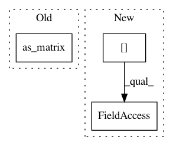

ef61bd954f975ee108ffe88482c5ad3207d222fe,nilmtk/dataset_converters/eco/convert_eco.py,,convert_eco,#Any#Any#Any#,32
Before Change
df_phase = df.ix[:,[1+phase, 5+phase, 8+phase, 13+phase]]
// get reactive power
power = df_phase.as_matrix([1+phase, 13+phase])
reactive = power[:,0] * np.tan(power[:,1] * np.pi / 180)
df_phase["Q"] = reactive
df_phase.index = pd.DatetimeIndex(start=fi[:-4], freq="s", periods=86400, tz="GMT")
After Change
df_phase = df.loc[:,[1+phase, 5+phase, 8+phase, 13+phase]]
// get reactive power
power = df_phase.loc[:, (1+phase, 13+phase)].values
reactive = power[:,0] * np.tan(power[:,1] * np.pi / 180)
df_phase["Q"] = reactive
df_phase.index = pd.DatetimeIndex(start=fi[:-4], freq="s", periods=86400, tz="GMT")
In pattern: SUPERPATTERN
Frequency: 3
Non-data size: 3
Instances
Project Name: nilmtk/nilmtk
Commit Name: ef61bd954f975ee108ffe88482c5ad3207d222fe
Time: 2018-09-08
Author: 10246101+PMeira@users.noreply.github.com
File Name: nilmtk/dataset_converters/eco/convert_eco.py
Class Name:
Method Name: convert_eco
Project Name: freelunchtheorem/Conditional_Density_Estimation
Commit Name: 57873938a7a032f5d428c2b094d7f88c3dd353c3
Time: 2018-08-18
Author: jonas.rothfuss@gmx.de
File Name: cde/helpers.py
Class Name:
Method Name: sample_center_points
Project Name: scikit-learn-contrib/sklearn-pandas
Commit Name: a4a2a4c55bbd5dd13ddb87f2ef95551996631c76
Time: 2015-11-07
Author: israel.saeta@dukebody.com
File Name: sklearn_pandas/__init__.py
Class Name: DataFrameMapper
Method Name: _get_col_subset